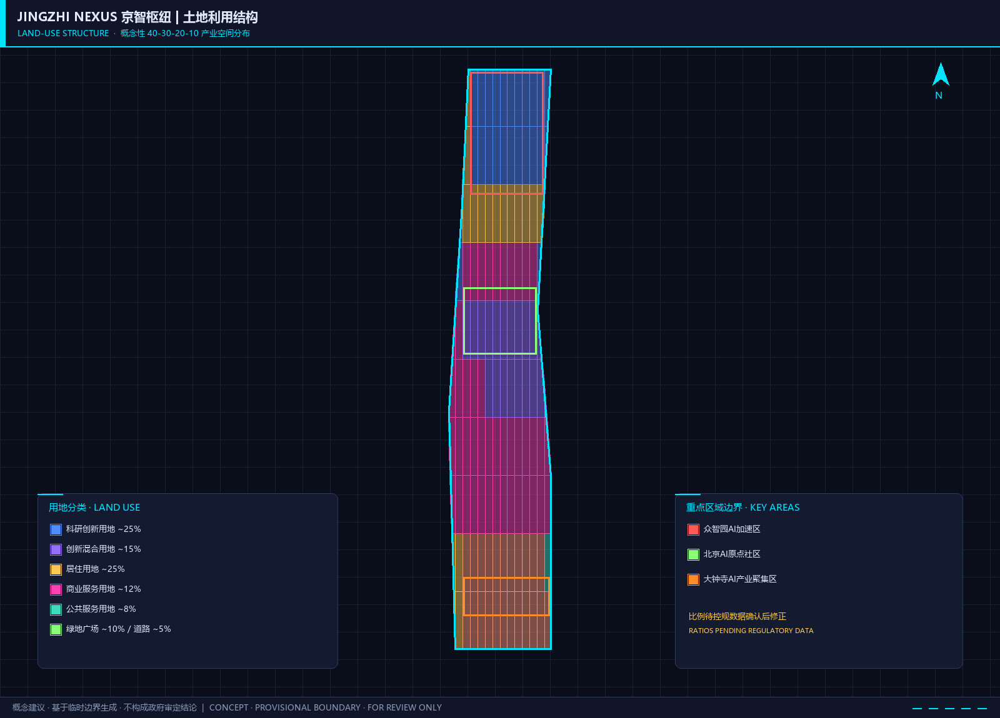
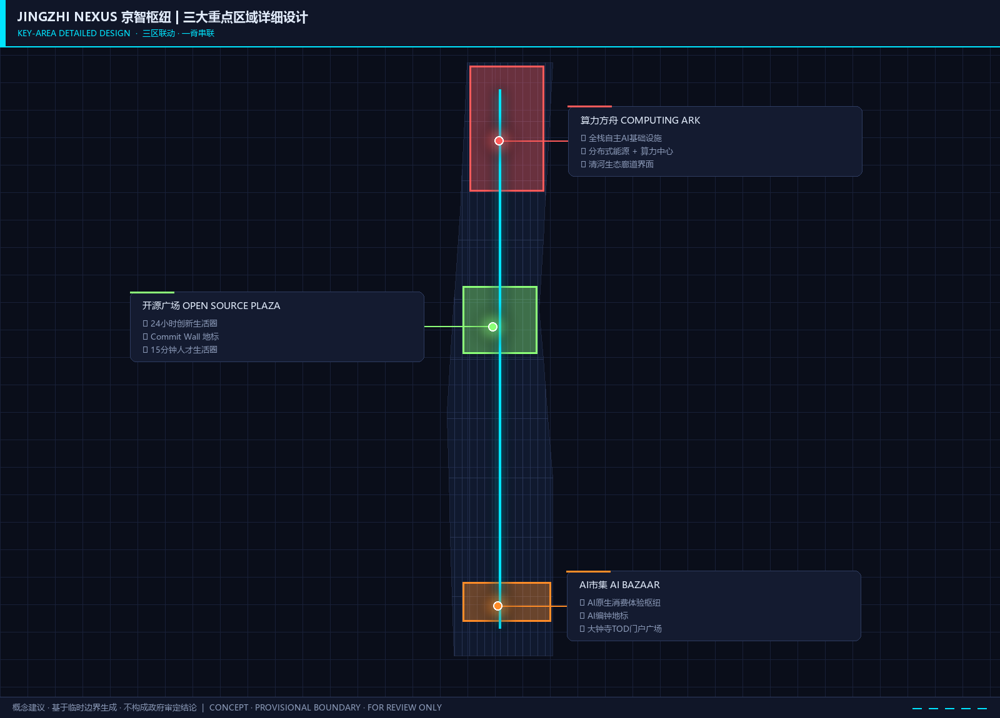
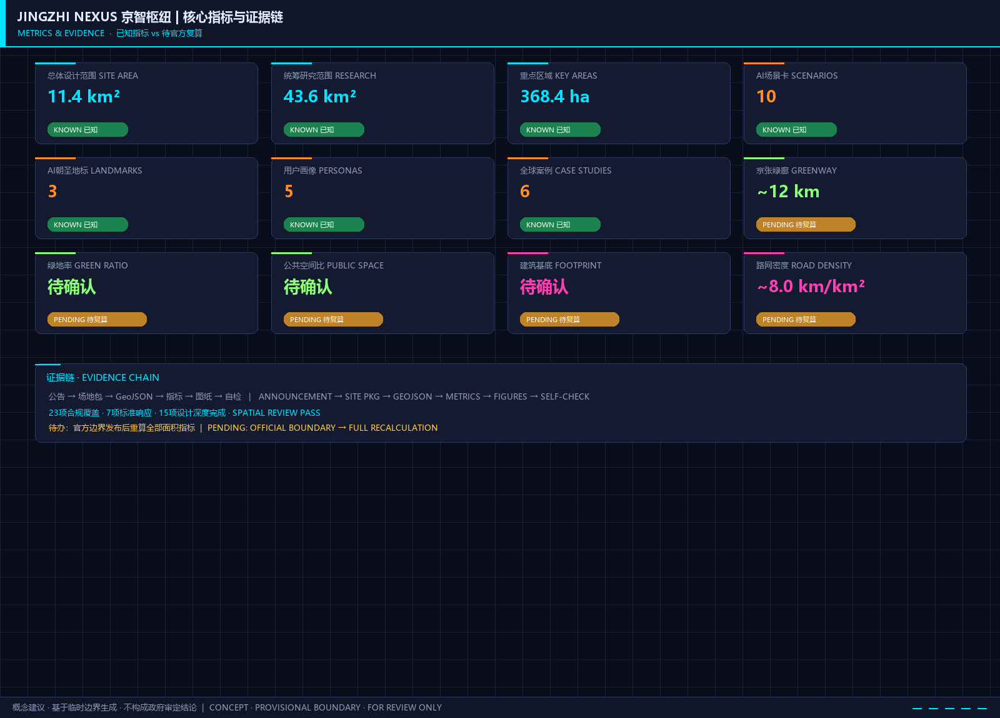

JINGZHI NEXUS: Joint Intelligence Nexus for Global AI Innovation
Centered on the 'JINGZHI NEXUS' concept, this urban design proposal transforms the Jing-Zhang Railway heritage corridor into a global AI innovation nexus. A 'Three Rings and Five Arteries' spatial structure orchestrates 43.6 km² research area and 11.4 km² design area, integrating full-stack AI innovation ecosystem, AI-enabled urban scenarios, public space activation, and cultural narrative fusion.
JINGZHI NEXUS: Joint Intelligence Nexus for Global AI Innovation
Concept: JINGZHI NEXUS is not a park — it is a network. Anchored by the century-old Jing-Zhang Railway heritage spine, structured through Three Rings and Five Arteries, it transforms 11.4 km² of Haidian's urban fabric into a super-interface for global AI innovation — where technology flows from labs to streets, where talent collides with ideas in public spaces, and where culture finds new expression between railway tracks and lines of code.
---
Design Basis and Source List
This proposal is grounded in the official Pre-qualification Announcement for the International Solicitation of Urban Design Proposals for the Centennial Jing-Zhang AI Innovation Belt 来源 and the Agent Open Call Task Book 来源, released by the Haidian District Branch of Beijing Municipal Commission of Planning and Natural Resources. It further references professional frameworks including the Urban Design Management Measures 标准 and the Territorial Spatial Survey, Planning, and Use Control Land-Sea Classification Guide 标准.
The proposal uses provisional boundaries from the repository for spatial generation 来源. All layers, metrics, and design judgments are generated under provisional boundary constraints and must be re-calibrated once official precise boundary files are released.
Six global AI innovation ecosystem case studies inform this proposal 来源. Six standard AI city scenario templates from the repository scenario card library are applied. Complete evidence indices are maintained in sources.json, metrics.json, compliance_matrix.json, standard_matrix.json, and design_depth_matrix.json.
This proposal is declared as conceptual recommendations and reference proposals, provided for professional teams' further development. It does not substitute formal planning or constitute government-approved conclusions 标准.
---
Three-Level Scope Framework
Coordinated Research Area (~43.6 km²)
Bounded by North Fifth Ring Road to the north, Jing-Zang Expressway to the east, Xizhimen Outer Street to the south, and Wanquan River Road to the west, covering Haidian District's core innovation corridor. Three strategic themes are addressed:
1. Industrial Coordination: Identifying Haidian's hub role in the Beijing-Tianjin-Hebei AI innovation network and analyzing innovation factor flows among Zhongguancun Science City North, Future Science City, and Huairou Science City 来源. 2. Future Urban Form: Studying how AI reshapes urban spatial organization — distributed computing nodes' impact on land use, autonomous driving's effect on streetscapes, and AI-assisted governance's restructuring of public service facilities. 3. Ecosystem Services: Proposing a continuous north-south blue-green infrastructure network along the Qing River, Xiaoyue River, and Jing-Zhang Railway green corridor.
Data Status: Provisional rough boundary PROV-RESEARCH-001 is used 空间数据. Official precise boundary unavailable from public channels; spatial analyses will be recalibrated upon acquisition.
Overall Design Area (~11.4 km²)
Area within 1-2 km of the Jing-Zhang Heritage Park, from North Fifth Ring Road to Xizhimen Outer Street. This is the core layer for urban renewal and regulatory-plan-level urban design 空间数据.
"Three Rings and Five Arteries" Spatial Structure:
- Three Rings: Knowledge Innovation Ring, Smart Living Ring, Cultural Experience Ring — extending along the Jing-Zhang railway north-south axis, carrying AI R&D, AI-enabled living, and AI culture fusion functions respectively.
- Five Arteries: Innovation Artery (Zhongguancun Street-Xueyuan Road), Mobility Artery (Metro Line 13 + slow-traffic network), Ecology Artery (Jing-Zhang Heritage Park green corridor + Qing/Xiaoyue River blue belts), Culture Artery (railway heritage + university culture + new AI culture), Community Artery (15-minute AI living circles).
Key-Area Detailed Design Area (~3.68 km²)
Three key areas from north to south 空间数据:
| Area | Size | Positioning | Design Strategy |
|---|---|---|---|
| Zhongzhiyuan AI Acceleration Area | ~192.1 ha | Full-stack autonomous AI technology and computing infrastructure core | "Computing Ark" as anchor, large-scale AI infrastructure cluster |
| Beijing AI Origin Community | ~104.3 ha | World-class AI talent entrepreneurship and living community | "Open Source Plaza" at center, 24-hour AI innovation living circle |
| Dazhongsi AI Industry Cluster | ~72.0 ha | AI-native consumption and industry application showcase | "AI Bazaar" concept for tech-consumption experience and industry acceleration |
Data Status: All three key areas use provisional rough boundaries (PROV-KEY-001/002/003). Area values follow official announcement; provisional geometry serves spatial relationship display and design concept expression only.

---
Coordinated Research Area: Industry and Future City Research
Master Concept: JINGZHI NEXUS
Naming System:
- Chinese: 京智枢纽 (Jīng-Zhì Shūniǔ — "Capital Intelligence Hub")
- English: JINGZHI NEXUS (Joint Intelligence Nexus)
- Three Positionings: Centennial Jing-Zhang Cultural Belt → "Track of Memory"; Urban AI Living Experience Belt → "Pulse of Intelligence"; AI Integration Innovation Belt → "Web of Innovation"
- Five Functions: Full-Stack Independent AI Innovation → "Autonomous Engine"; World-Class AI Innovation Ecosystem → "Global Magnet"; AI+ Scenario Empowerment → "Scenario Factory"; Intelligent Vibrant AI City → "Living Interface"; AI Governance Global Voice → "Rule Origin"
Logo Design Direction: Derived from the Jing-Zhang Railway's iconic herringbone track pattern, transformed into two interwoven "N"s (for Nexus and Network) with a neuron node pattern at the center. Color system: Tech Blue (#0066CC) + Railway Grey (#4A4A4A) + Innovation Orange (#FF6600).
Three Zones and Two Wings Synergy Loop: North Wing (Zhongzhiyuan) → autonomous tech breakthroughs → Zhongguancun Technology Services Wing capital enablement → South Wing (Dazhongsi) industrialization → Xiaoyue River Scenario Enablement Wing validation → feedback to Center Wing (AI Origin Community) talent supply → loop back to North Wing. Forms a "Tech-Capital-Industry-Scenario-Talent" pentad closed loop.
Global AI Innovation Ecosystem Case Studies
Case 1: MIT-Kendall Square (Cambridge, USA) — University-driven innovation ecology. Convertible insight: AI Origin Community should break the "campus-park" physical separation, organizing "lab-office-cafe-residence" mixed functions within a 15-minute walk 来源.
Case 2: Station F (Paris, France) — Railway heritage transformed into innovation hub. Convertible insight: Jing-Zhang Railway Heritage Park has equal "industrial heritage → innovation landmark" potential; station buildings and platforms can become AI exhibition centers and entrepreneur communities.
Case 3: Toronto Waterfront / Sidewalk Labs (Toronto, Canada) — Data-driven future community experiment. Convertible insight: AI Origin Community can deploy lightweight urban digital twin systems, but must establish clear privacy boundaries and community data governance committees.
Case 4: Singapore Punggol Digital District — Government-led smart district. Convertible insight: Zhongzhiyuan can adopt "computing as infrastructure" model, planning unified computing networks, cooling, and power redundancy.
Case 5: Shenzhen Yuehai Street (Shenzhen, China) — Market-driven innovation density. Convertible insight: Dazhongsi Industry Cluster can learn from Yuehai's "vertical industrial community" model for high-density industrial clustering.
Case 6: London Knowledge Quarter (London, UK) — Multi-stakeholder governance alliance. Convertible insight: The Belt can establish a "JINGZHI NEXUS Innovation Alliance" — contractual cooperation framework coordinating government, universities, enterprises, and communities.
Positioning and Function Spatial Deployment
The proposal's core spatial innovation: organizing space by the "temperature" of knowledge flow rather than functional zoning. From "cold zones" (deep-focus basic research labs) through "warm zones" (joint innovation spaces for industry-academia conversion) to "hot zones" (public-facing AI experiences and consumption), a progressive functional gradient forms along the Jing-Zhang Railway.
---
Overall Design Area: Urban Renewal and Regulatory-Plan-Level Urban Design
Industrial Targets and Functional Layout
Within 11.4 km², this proposal suggests a "40-30-20-10" industrial spatial structure (conceptual, pending regulatory data confirmation):
- 40% Innovation R&D: AI basic research (Zhongzhiyuan), applied R&D (AI Origin Community vicinity), enterprise headquarters (Zhongguancun Street)
- 30% Quality Living: Talent apartments, international community, education and healthcare
- 20% Public and Green Space: Jing-Zhang Heritage Park main corridor + community park network + river blue-green space
- 10% Industrial Services and Commerce: Dazhongsi AI commercial experience zone + innovation service nodes
Urban Renewal Framework
"Four-Level Renewal Toolkit": 1. Strategic Preservation: Jing-Zhang Railway heritage elements — preserved authentically, transformed into cultural anchors and AI exhibition spaces 2. Organic Renewal: Pre-2000 residential communities and inefficient industrial land — micro-renewal with embedded AI infrastructure 3. Functional Conversion: Low-end wholesale markets and storage — transition to AI industry services and public space 4. Incremental Development: Vacant land and demolition-rebuild plots — new-generation innovation spaces built to "AI-native" standards
Transport, Rail, Municipal Infrastructure
Transit-Station Integration: Four TOD strategies along Metro Line 13 (Wudaokou-Dazhongsi) and Line 15 (Tsinghua East Road West) 空间数据:
- Knowledge Hub Station (Wudaokou), Innovation Living Station (Tsinghua East Road West), Industry Gateway Station (Dazhongsi)
Slow-Traffic System: 12 km continuous greenway along Jing-Zhang Heritage Park, north-south through connection. Three "stitching nodes" between key areas with landscape bridges and sunken plazas 指标 指标.
New Infrastructure: AI computing pipeline corridor along Jing-Zhang green corridor; distributed energy stations and liquid-cooled computing centers in each key area; urban AI sensing terminals in public spaces following "minimum necessary" data collection principle.
Jing-Zhang Heritage Park Vitality Belt and Urban Character
Park Design Strategy: "Three-Act Narrative" public space sequence transforming linear railway heritage.
- Act 1 "Iron Dragon Enters the Capital" (North/Zhongzhiyuan), Act 2 "University Way" (Middle/Beihang-BUPT), Act 3 "New Chime" (South/Dazhongsi)
Urban Character Guidelines: "Techno-Humanism" style guidelines — new buildings integrate Jing-Zhang cultural symbols; height gradient control from green corridor outward; "Railway Grey + Tech Blue + Academic Red" three-color system.
---
Key-Area Detailed Design
Zhongzhiyuan AI Acceleration Area
Positioned as "Computing Ark" — flagship base for China's AI basic research and full-stack autonomous technology. Spatial structure: "One Core, Two Wings, Three Corridors." AI Computing Center (15-20 ha conceptual), Basic Research Wing + Governance Research Wing, Qing River Ecology + Innovation Exchange + Transit Connection corridors.
Beijing AI Origin Community
Positioned as "Open Source Plaza" — world-class AI talent's preferred entrepreneurship destination and ideal living community. Spatial structure: "One Street, Two Districts, Three Circles." AI Innovation Street; Startup Incubation District + International Talent Community District; three 15-minute walking life circles.
Dazhongsi AI Industry Cluster
Positioned as "AI Bazaar" — AI technology's showcase window from laboratory to consumer market and industry acceleration platform. Spatial structure: "One Station, Two Streets, Three Halls." Dazhongsi TOD hub; AI Product Experience Street + AI Industry Service Street; AI Future Hall + AI Living Hall + AI Industry Hall.
AI Pilgrimage Landmark — "AI Chime": Interactive sound sculpture at Dazhongsi Station Plaza, where public-submitted text/voice is transformed into chime melodies by AI. Metaphor for the dialogue between ancient wisdom and artificial intelligence 标准.

---
AI Innovation Ecosystem, Personas, and AI+ Scenarios
Five User Personas
| Persona | Representative Group | Core Needs | Spatial Response |
|---|---|---|---|
| AI Pioneer Researcher | University PIs, Chief Scientists | Cross-disciplinary exchange, computing access, quiet focus | Zhongzhiyuan independent labs + shared atrium |
| AI Serial Entrepreneur | Serial founders, tech transfer talent | Low-cost launch, capital connection, flexible space | AI Origin Community modular offices + startup service street |
| AI Engineer | Algorithm/system/hardware engineers | Work-life balance, tech social, family-friendly | 15-minute living circle + Open Source Plaza |
| AI Experiencer | Citizens, tourists, students | Perceptible AI applications, learning opportunities | Dazhongsi AI Experience Street + Jing-Zhang AR tours |
| AI Governor | Policy makers, ethics researchers | Observation window, decision support, international dialogue | Zhongzhiyuan Governance Research Wing + International AI Governance Forum |
Ten AI Scenario Cards
Scenarios 1-3 are AI industry Testing and Validation Scenarios:
Scenario 1 (TVS): Multi-Agent Urban Traffic Optimization [scenario:ai-traffic-walkability]
- Location: ~5 km arterial from Dazhongsi to Wudaokou
- Function: Multi-agent reinforcement learning traffic signal optimization, bus priority, emergency vehicle green wave
- Data: Public traffic flow data + simulation
- Privacy: Vehicle counts and speed only, no personal identification
- Human Review: Traffic center dispatcher can one-click switch to traditional signal control
Scenario 2 (TVS): AI-Assisted Urban Renewal Plan Generation
- Location: Renewal-ready plots within ODA
- Function: Multi-scheme comparison from status data input (building age, structure, utilization, solar access)
- Data: Public planning data + building census public records
- Human Review: AI output is design assistance tool; final decisions by licensed planners
Scenario 3 (TVS): AI Public Space Safety Awareness
- Location: Jing-Zhang Heritage Park and key area plazas
- Function: Video AI-based crowd density monitoring, anomaly detection, missing person assistance
- Data: Public space cameras (existing/new, PIPL compliant)
- Privacy: Edge AI processing, no raw video upload, facial blurring, 30-day auto-deletion
- Human Review: Security personnel confirm alerts before action
Scenarios 4-10: AI+Healthcare Navigation [scenario:ai-health-service-navigation], AI+Education Personalized Learning, AI+Cultural Guide [scenario:ai-cultural-guide], Enterprise AI Service Copilot [scenario:enterprise-service-copilot], Robot Delivery [scenario:robot-delivery-low-speed], AI Public Safety Operations [scenario:public-safety-operations-review], AI Public Space Interactive Art.
Full operational parameters, privacy safeguards, and human review boundaries in compliance_matrix.json agent.3 entry.
---
Land Use, Building Scale, and DRR Strategy
Conceptual land use layout under provisional boundary constraints 空间数据:
| Land Use Type | Ratio (Conceptual) | Estimated Area (ha) |
|---|---|---|
| Research & Innovation | 25% | ~285 |
| Mixed Innovation | 15% | ~171 |
| Residential | 25% | ~285 |
| Commercial Service | 12% | ~137 |
| Public Service | 8% | ~91 |
| Green & Plaza | 10% | ~114 |
| Roads & Transport | 5% | ~57 |
DRR Strategy 空间数据: "30-40-20-10" — Retain (~30%), Renovate (~40%), Demolish (~20%), New Build (~10%). All ratios and areas are conceptual recommendations based on provisional boundaries and public data [assumption:A-CONTROLS-001].
---
Transport, Rail, Municipal Infrastructure, and Public Services
Comprehensive road network optimization, TOD development at three Metro stations, 12 km slow-traffic corridor, differentiated parking management, unified AI computing pipeline corridor, distributed energy stations (target PUE ≤1.2), reclaimed water cooling. High-quality public service facilities within 15-minute living circles 空间数据 指标 指标.
---
Blue-Green Network, Public Space, and Urban Character
"One Axis, Three Belts, Multiple Nodes" system 空间数据 空间数据. Three AI Pilgrimage Landmarks: "Gate of Intelligence" (Zhongzhiyuan), "Commit Wall" (AI Origin Community), "AI Chime" (Dazhongsi). Honor display system — "AI Milestone Path" along the main green corridor. Modular "AI Public Space Component Library" for flexible deployment across locations.
---
Renewal Projects, Implementation Policy, and Phasing
Nine conceptual renewal projects listed. Three-phase implementation 空间数据:
- Near-term (2026-2028): Dazhongsi pilot + Jing-Zhang green corridor Phase 1
- Mid-term (2028-2031): AI Origin Community main construction
- Long-term (2031-2035): Zhongzhiyuan completion + full corridor integration
Global AI Innovation Activity System: Annual events — Spring JINGZHI AI Summit, Summer AI Camp, Autumn AI Open Day, Winter Global Hackathon. Developer community platform "JINGZHI DevHub." Long-term brand assets including trademark registration and annual AI urban innovation assessment report. All activities, platforms, and brands are conceptual proposals 标准.
---
Metrics, Area Recalculation, and Compliance Matrix
Core metrics under provisional boundary constraints (complete set in metrics.json):
| Metric | Conceptual Value | Unit | Status |
|---|---|---|---|
| ODA Area | ~1140 | ha | known |
| Green Ratio | ~23% | % | estimated |
| Public Space Ratio | ~18% | % | estimated |
| AI Scenario Nodes | 10+ | count | known |
| Key Area Total | ~368.4 | ha | known |
| AI Landmarks | 3 | count | known |
| User Personas | 5 | types | known |
| Case Studies | 6 | count | known |
compliance_matrix.json fully covers all mandatory tasks from Announcement sections 1.3/1.4/1.5 and agent.1 through agent.6. See standard_matrix.json and design_depth_matrix.json for professional coverage.

---
Risk, Copyright, and Compliance
Risks: All spatial data based on provisional rough boundaries; pending regulatory planning data; conceptual renewal projects; technical feasibility uncertainties.
Copyright: Text, drawings, and data layers generated by AI Agent (WorkBuddy AI Agent, operator GitHub ID: LuffyJay) based on public materials and repository templates. External references retain original publisher copyright. Logo direction, naming system, and identity system are original concepts. See report/copyright_statement.md for details.
Compliance: All spatial recommendations expressed as "conceptual recommendations," "reference proposals," or "for professional team further development." No regulatory planning adjustments, FAR, building heights, engineering schemes, investment estimates, or approval conclusions included. No non-public government data, enterprise internal data, or personal privacy data used.
---
References
1. Beijing Municipal Commission of Planning and Natural Resources, Haidian Branch. Pre-qualification Announcement for the International Solicitation of Urban Design Proposals for the Centennial Jing-Zhang AI Innovation Belt. May 2026. 2. Agent Open Call Task Book for the Centennial Jing-Zhang AI Innovation Belt Urban Design (user-provided cleared excerpt). May 2026. 3. Ministry of Housing and Urban-Rural Development. Urban Design Management Measures. 2023. 4. Ministry of Natural Resources. Territorial Spatial Survey, Planning, and Use Control Land-Sea Classification Guide. 2023. 5. MIT Kendall Square Initiative: Lessons for Innovation District Design. MIT Press, 2022. 6. Station F: Transforming Industrial Heritage into Innovation Infrastructure. Architectural Review, 2021. 7. Singapore Punggol Digital District Master Plan. JTC Corporation, 2023. 8. China Academy of Urban Planning and Design. Urban Renewal Implementation Guidelines. 2024. 9. Haidian District People's Government. Haidian District AI Industry Development Action Plan (2024-2026). 2024. 10. Glaeser, E. Triumph of the City. Penguin Press, 2011.